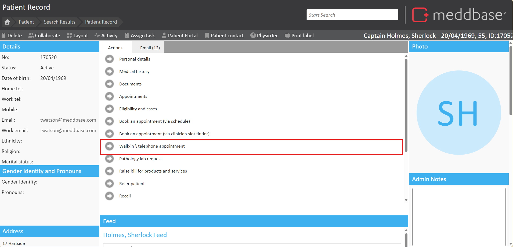
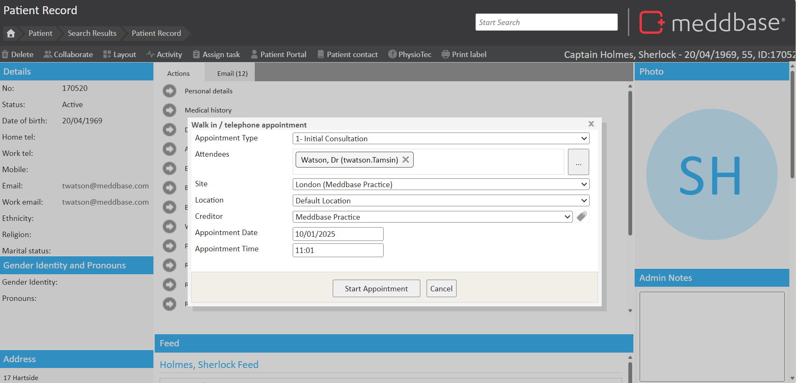
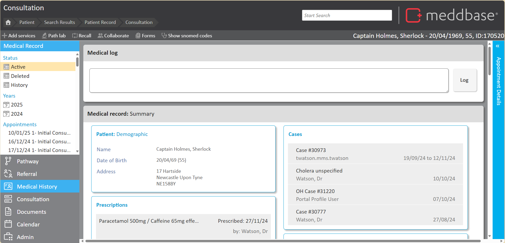

In certain situations, such as emergencies, walk-ins, or telephone appointments, you may need to start an unscheduled appointment immediately. Meddbase provides a tool to facilitate this process, which is initiated from the Patient Record page.
This article explains how to use the Walk-in / Telephone Appointments tool to start an unscheduled appointment.
Begin by accessing the patient’s home page (or create a new patient if this is their first visit). Within the ‘Actions’ pane you will find a link to Walk-in / Telephone Appointments.

Click on this panel to bring up the Walk in/ telephone appointment dialogue box.

In this window, you can define:
Once you have defined the required fields, click Start Appointment.
After clicking Start Appointment, the user will be taken to the Patient's Medical History in the Consultation Suite. The appointment will be booked and arrived instantly with the logged-in user as the attendee in the background.

The consultation would then be conducted as per your usual process.